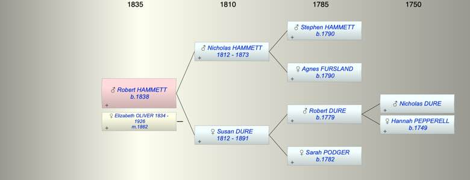

| [Index] |
| Robert H HAMMETT (1838 - ) |
|  |
| b. 1838 at Stokenham |
| m. 1862 Elizabeth Downing OLIVER (1834 - 1926) at Kelly Devon |
| Near Relatives of Robert H HAMMETT (1838 - ) | ||||||
| Relationship | Person | Born | Birth Place | Died | Death Place | Age |
| Grandfather | Stephen HAMMETT | abt 1790 | ||||
| Grandmother | Agnes FURSLAND | abt 1790 | ||||
| Grandfather | Robert Pepperell DURE | 1779 | Stokenham, Devon | |||
| Grandmother | Sarah PODGER | 1782 | Langport, Somerset | |||
| Father in Law | Robert OLLIVER | |||||
| Mother in Law | Matilda WHITE | 28 Nov 1814 | Salisbury | 26 Jul 1882 | Kelly Devon | 67 |
| Father | Nicholas John HAMMETT | 1812 | Plymouth | 1873 | Plympton St Mary | 61 |
| Mother | Susan DURE | abt 1812 | 1891 | Plympton St Mary | 79 | |
| Self | Robert H HAMMETT | 1838 | Stokenham | |||
| Wife | Elizabeth Downing OLIVER | 1834 | Exeter | 1926 | Plymouth | 92 |
| Sister | Sarah Agnes HAMMETT | 1841 | Plymton | 1880 | 39 | |
| Brother | Stephen HAMMETT | 16 Jun 1845 | Plympton St Mary | 29 Apr 1915 | Plymouth | 69 |
| Aunt | Agnes HAMMETT | 1814 | Plymouth | 07 Jun 1866 | Plymouth | 52 |
| Uncle | Thomas WHITE | 1812 | 18 Jan 1857 | Plymouth | 45 | |
| Aunt | Elizabeth HAMMETT | 1817 | Plymouth | |||
| Uncle | Robert DURE | 1816 | Langport | 16 Jun 1866 | Coleridge, Devon | 50 |
| Aunt | Elizabeth HARLEY | |||||
| Uncle | William DURE | 1816 | ||||
| Cousin | Thomas WHITE | 1843 | Plymouth | |||
| Cousin | Agnes P WHITE | 1848 | Stoke Damerel, Plymouth | |||
| Cousin | Eliz DURE | 1841 | South Pool, Devon | |||
| Cousin | Mary Grace Hurley DURE | 1843 | Stokenham | |||
| Cousin | John Harley DURE | 1845 | Stokenham | |||
| Niece | Living or Recently Deceased | |||||
| Nephew | George Goodwin BREWER | 27 Jan 1886 | Teignmouth | 1894 | 8 | |
| Niece | Living or Recently Deceased | |||||
| Niece | Living or Recently Deceased | |||||
| Nephew | Stewart G BREWER | 05 Jul 1890 | Teignmouth | 1892 | 2 | |
| Niece | Susan Annie HAMMETT | 1871 | Plymouth | 1872 | Plymouth | 1 |
| Niece | Living or Recently Deceased | |||||
| Brother in Law | William PERRY | 1841 | Kelly Devon | |||
| Brother in Law | Jehu PERRY | 1843 | Kelly Devon | 1913 | Gulworthy | 70 |
| Brother in Law | John PERRY | 1844 | Kelly Devon | 1873 | Kelly Devon | 29 |
| Sister in Law | Elisa PERRY | 1846 | Kelly Devon | |||
| Sister in Law | Solomon PERRY | 1851 | Kelly Devon | |||
| Sister in Law | Matilda PERRY | 1854 | Kelly Devon | |||
| Brother in Law | John PERRY | 1855 | Kelly Devon | |||
| Brother in Law | George PERRY | 1856 | Kelly Devon | |||
| Brother in Law | Charles BREWER | 1851 | Starcross | |||
| Sister in Law | Catherine Julyan COOPER | 1837 | Falmouth | 05 May 1923 | Plymouth | 86 |
| Events in Robert H HAMMETT (1838 - )'s life | |||||
| Date | Age | Event | Place | Notes | Src |
| 1838 | Robert H HAMMETT was born | Stokenham | ex 1891 census | ||
| 1862 | 24 | Married Elizabeth Downing OLIVER (aged 28) | Kelly Devon | ||
| 1873 | 35 | Death of father Nicholas John HAMMETT (aged 61) | Plympton St Mary | Note 1 | |
| 1891 | 53 | Death of mother Susan DURE (aged 79) | Plympton St Mary | Note 2 | |
| 1926 | 88 | Death of wife Elizabeth Downing OLIVER (aged 92) | Plymouth | aged 91 ex Death reg | |
| Note 1: buried 23 Feb 1873aged 60 ex FMP PR |
| Note 2: buried 13 Dec 1891 ex Ancestry buried 13 Dec 1891 at Plympton St Mary aged 79 (born 1812) ex Ancestry PR. |
| Personal Notes: |
|
1861 lodging with Agnes White 46 Furniture broker born Turn Chapel. Rober t was single 23 railway guard born Litton , Devon. Agnes WHite was a witnesses at his wedding.
1871 living Plymouth Robert Hammett 33 born Kingsbridge and his wife Elizabeth 35 b Totnes 1881 living Plymputh 44 b Stokenham and his wife Elizabeth absent his mother Susan wiow 72 born Langport Somerset and a neice Elizabeth Hammett 16 b Sparkwell Devon 1891 census 50, born Stokenham, Devon with his wife Elizabeth D 55 b Ashprington, Devon and his mother Susan 79 born Langport Somerset 1812; and his neice Charlotte 13/16? b 1876 Plymouth and his nephew Henry Perry 25 born Thrushelton, Devon, 1901 census living Plymouth Robert 63 born Kongsbridge and his wife Elizabeth D 66 born Totnes 1911 census confirms no children Elizabeth Downing Hammett his wife 76 married 49 years and born b AShprington |
| Created on a Mac™ using iFamily for Mac™ on 15 Sep 2023 |